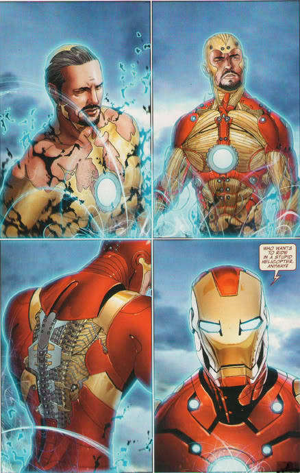

HTML5 Video APIs
What are we talking about?
Warning!
This is bleeding edge technology.
Spoilers: It doesn't work in Internet Explorer
navigator.getUserMedia
What is it?
getUserMedia prompts for permission to use a media device, like a camera or microphone
navigator.getUserMedia ( constraints, successCallback, errorCallback );
constraints
{ video: true, audio: true }
successCallback
function(localMediaStream) {
var video = document.querySelector('video');
video.src = window.URL.createObjectURL(localMediaStream);
video.onloadedmetadata = function(e) {
// Do stuff with the video
};
},
errorCallback
PERMISSION_DENIED - the user didn't grant permission
NOT_SUPPORTED_ERROR - not supported by the browser
MANDATORY_UNSATISFIED_ERROR - not found
Examples!
Taking a Photo
via Mozilla
Modifying Output
via DeShawn
var imageData = ctxInput.getImageData(0, 0, 640, 480);
// Because of how the datastructure is defined above lets go
// through every 4 pixels to be speedy.
for (var i = 0; i < 640 * 480 * 4; i+=4) {
// Where the magic happens...
// The red pixel
imageData.data[i] = imageData.data[i];
// The green pixel, lets +100 it so the output is green.
imageData.data[i + 1] = imageData.data[i + 1] + 100;
// The blue pixel
imageData.data[i + 2] = imageData.data[i + 2];
}
WebRTC
What is WebRTC
- Audio streaming!
- Video streaming!
- Much more!
Okay, what does it do?
- Get streaming data
- Get network information
- Coordinate signalling between peers
- Exchange information about capabilities
Tell me more...
WebRTC has a few APIs:
- MediaStream (you've seen this!)
- RTCPeerConnection
- RTCDataChannel
RTCPeerConnection

There are libraries!
webrtc.io
rtc.connect('ws://yourserveraddress:8001');
rtc.createStream({"video": true, "audio":false}, function(stream){
// get local stream for manipulation
rtc.attachStream(stream, 'local');
});
rtc.on('add remote stream', function(stream){
// show the remote video
rtc.attachStream(stream, 'remote');
});var webRTC = require('webrtc.io').listen(8001);SimpleWebRTC
Demo!
Simple P2P Video, using JavaScript
So... now what?
- For simple video or audio, all you need is getUserMedia
- For fancy stuff, you need WebRTC
- You might want a library for that, such as SimpleWebRTC